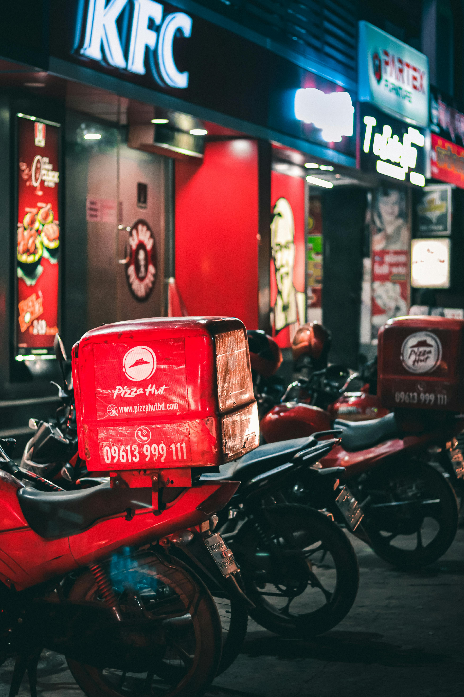

In an uncommon situation like this coronavirus pandemic, people more consider their health. In purchasing food, especially, customers prefer to order food through online applications and trusted providers than directly visiting the restaurant [8] to avoid getting virus infected. Unfortunately, studies on the influence of product or food quality and e-service quality towards customer trust as well as customer trust towards loyalty are still rare in the OFD system context. Therefore, according to this gap, this research aims to determine how both e-service quality and food quality influence customer trust and how customer trust influences customer loyalty in the OFD context. This study is expected to bring two implications. First, it can enrich the literature on customer trust and loyalty in the context of OFD services. Second, it can provide useful guidelines for culinary business actors to develop strategies in developing their business activity
